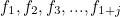
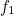
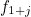
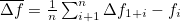
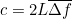

Лабораторная работа
Определение скорости звука в воздухе с помощью
трубки Кундта
Перед выполнением задания ознакомьтесь с теорией работы: Методическое пособие.pdf
Задание. Определение скорости звука
- Изменяя частоту звукового генератора в пределах от 3000 Гц до 6800 Гц (рекомендованный шаг 100 Гц) фиксируйте значение относительной интенсивности сигнала и соответствующей частоты.
- Занесите в заранее подготовленную таблицу максимальные значения отн. интенсивности и соответствующие частоты, найденные в этом интервале.
Полученные последовательно значения

, где 
соответствует наименьшей из зарегистрированных частот, а 
– наибольшей в данном частотном диапазоне.
- Для всех пар соседних по возрастанию частот определите среднее значение разностей:
. - Исключите из рассмотрения «ложные максимумы, связанные с нелинейностью АЧХ измерительного тракта, если таковые имеются.
- Используя формулу 
,определите скорость звука в исследованном диапазоне частот. Длина трубы составляет L = 24 см.
- Найдите общую погрешность эксперимента.
- Сделайте выводы о проделанной работе.
Для того чтобы получить значение отн. интенсивности сигнала, введите в поле «Частота сигнала (Гц)» требуемую частоту и нажмите на кнопку «Сигнал». Данные отобразятся на графике. По завершении работы сохраните график нажав на кнопку "⬇ .png".